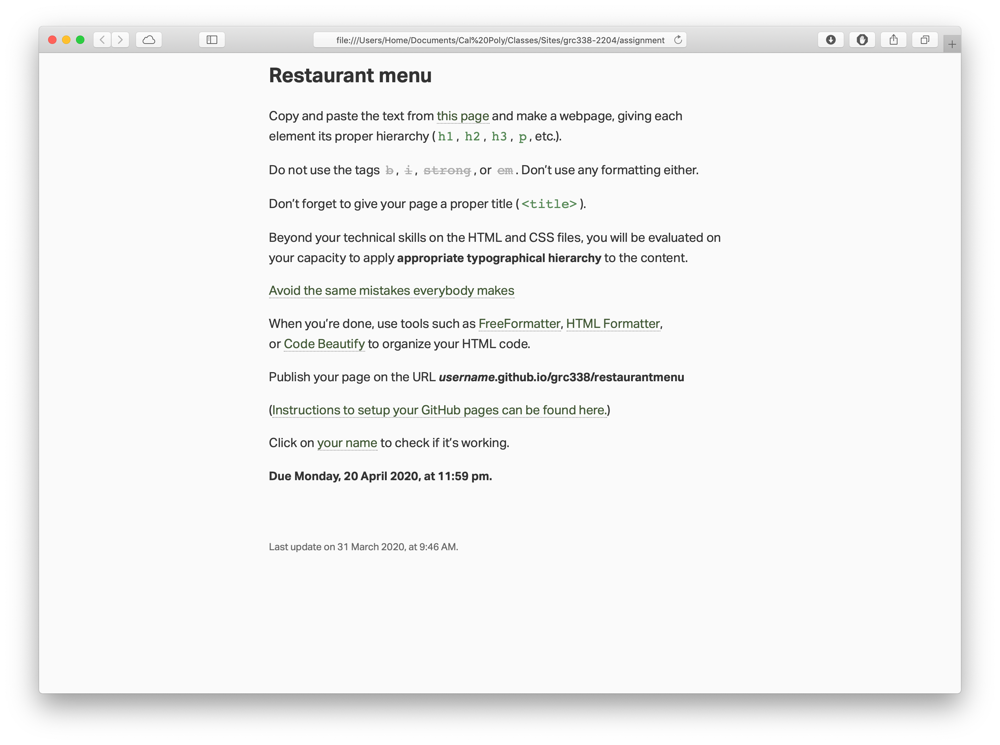
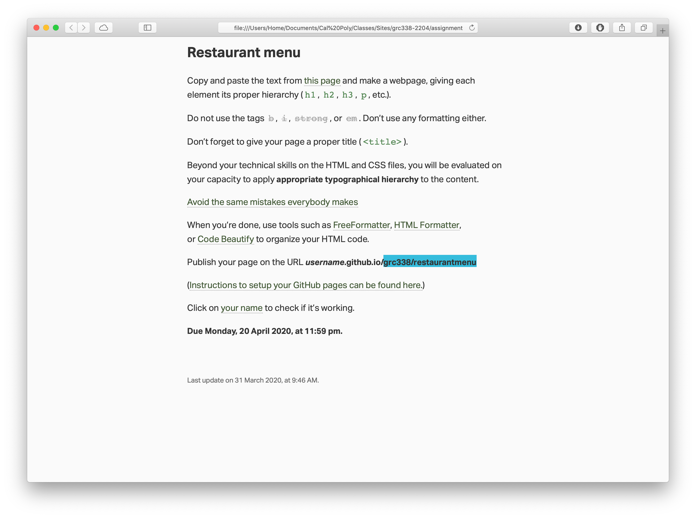
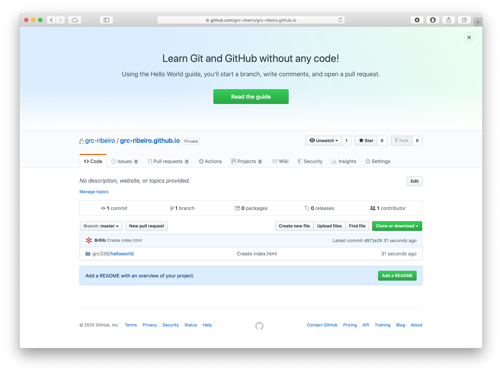
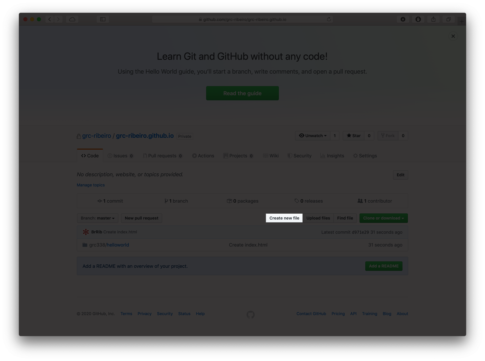
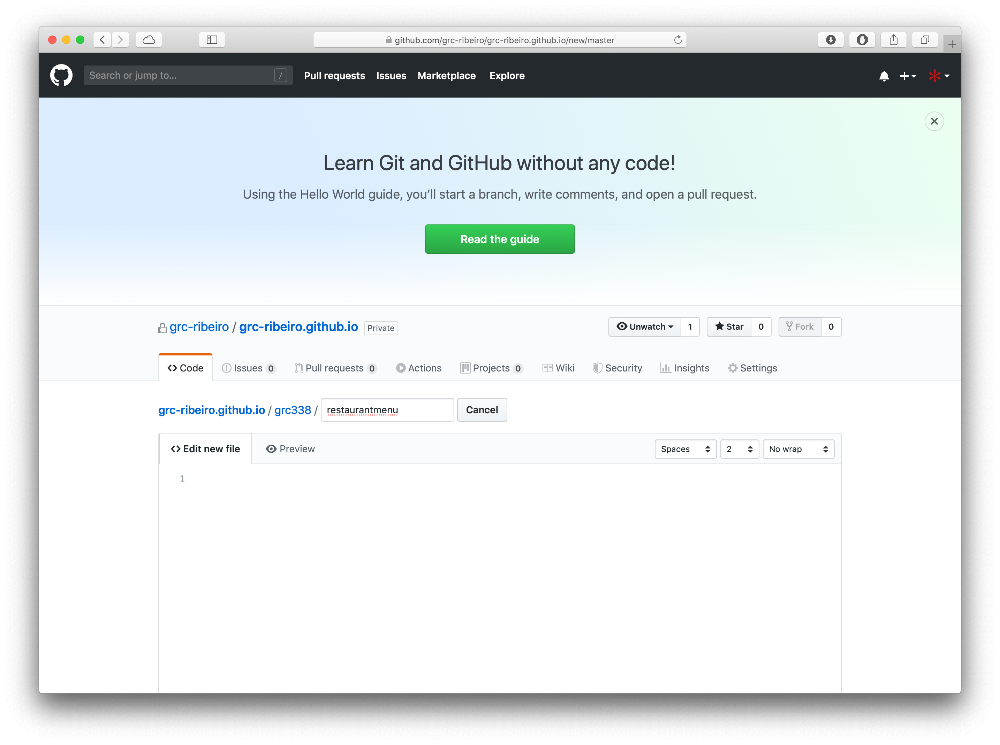
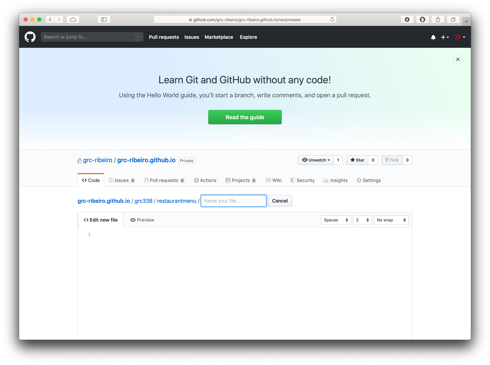
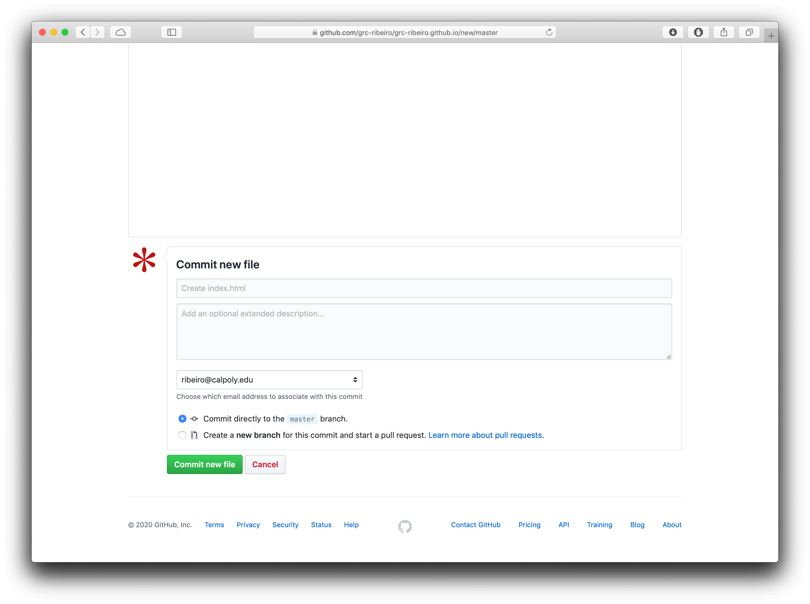
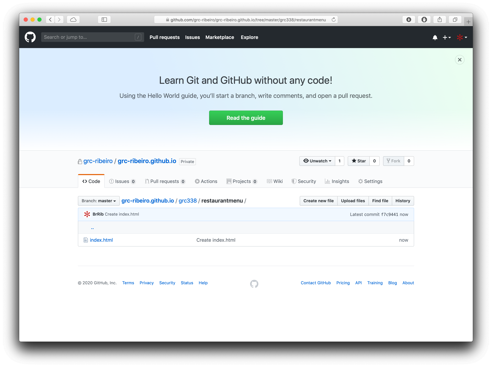
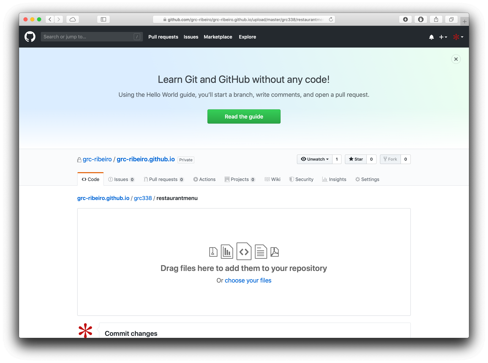

This is the part 2 of a two‑part tutorial. Make sure you have read the part 1 of this tutorial.
First, go to the assignment instructions and copy the URL after the first slash (/).


Now, log in GitHub and go to the repository named username.github.io.

Click on Create new file.

Paste the part of the URL that you copied from the assignment instructions in the first step of this short tutorial as the name of your file you’re creating.

Include a new slash (/) at the end of it, so GitHub understands it’s a folder.

Create the file index.html
Scroll down and click on Commit new file.

Click on Upload files.

Drag and drop your files or click on choose your files to navigate to them on your computer.

click on Commit new file again.
Before you mark as done on Canvas, you must check the list of links and click on your name to make sure it’s working.